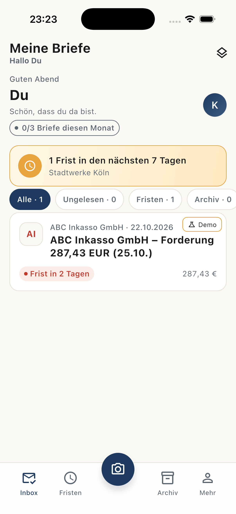
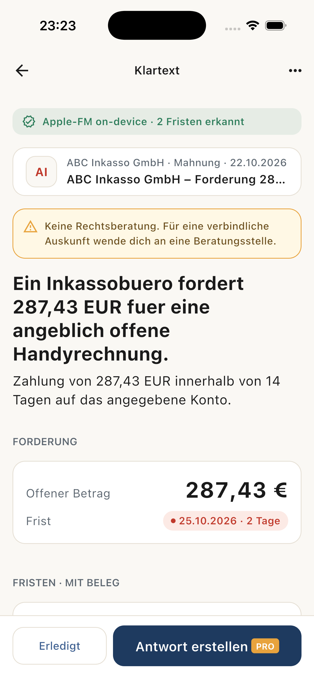
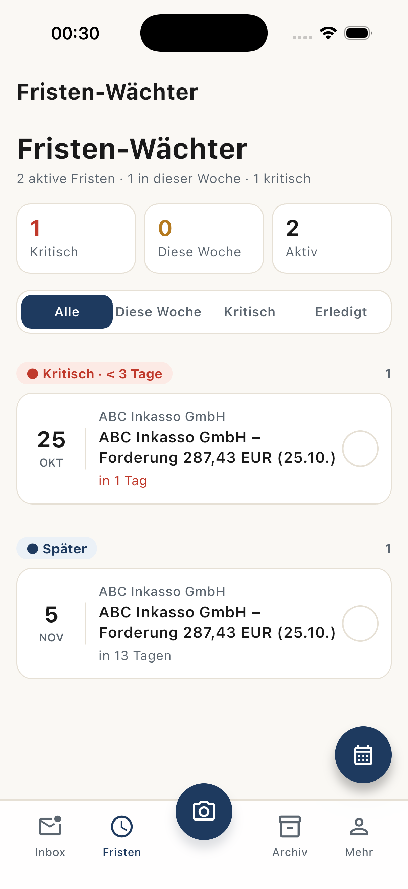

Für alle, die schon mal einen Brief nicht verstanden haben
Du hast einen Brief bekommen.
412,00 €. Frist: 25.10.
Und keinerlei Ahnung, was das bedeutet, ob du zahlen musst, was du bestreiten kannst oder was passiert, wenn du nichts tust.
Bald im App Store3 Briefanalysen im Monat gratis. Kein Account, keine E-Mail-Adresse.
So kommt der Brief an
Eingang beim Steueramt
Bescheid über die Festsetzung der Einkommensteuer für das Kalenderjahr 2025. Der Steuerbetrag wird festgesetzt. Die Jahressteuer beträgt 412,00 €.
Ein Rechtsbehelf ist innerhalb eines Monats nach Bekanntgabe einzulegen. Die Frist beginnt nicht mit dem Datum des Bescheids.
Die Frist beginnt nicht mit dem Datum des Bescheids.
So liest sich das danach
Du musst 412,00 € zahlen. Bis zum 25.10. — in 12 Tagen.
Wenn du die Zahlung nicht akzeptierst: Einspruch einlegen, fristgerecht. Die Frist läuft ab dem Tag, an dem der Bescheid dich erreicht hat — nicht ab dem Datum auf dem Papier.
Wenn du nichts tust: Inkasso kann die Forderung weitergeben.
→ Vorlage für deinen Einspruch liegt bereit
Jeder Brief beantwortet drei Fragen
- Was wollen die von mir?Betrag, Adressat, Forderung — ohne Amtsdeutsch.
- Bis wann?Die Frist, und ab wann sie läuft. Das ist nicht dasselbe Datum.
- Was, wenn ich nichts tue?Die Folge — oft Mahngebühren, manchmal Gericht.



Dein Brief hört anderen Leuten nichts
Das ist keine Marketing-Aussage, das ist Architektur: Die App hat keinen Server-Zugang zu deinen Scans. Texterkennung und Analyse laufen auf deinem iPhone, in einer verschlüsselten Datenbank.
Wir bauen kein Analytics ein, wir zeigen keine Werbung, wir verkaufen nichts. Es gibt keinen Ort in der App, an dem dein Brieftext hineingeht.
Wenn du genau wissen willst, was wo liegt: Datenschutzerklärung.
- 0 Analytics-SDKs
- 0 Werbenetzwerke
- 0 Tracking
- 1 verschlüsselte Datenbank, auf deinem Gerät
Der Antwort-Assistent
Für Inkasso, Finanzamt, Krankenkasse, Versicherungen und Rundfunkbeitrag liegen passende Schreiben bereit — Einspruch, Widerspruch, Kündigung. Ausgefüllt mit den Angaben aus deinem Brief.
Dazu unbegrenzte Analysen, Volltextsuche im Archiv und Kalender-Export.
39,99 € pro Jahr · 3,33 € im Monat · 14 Tage testen
Bald im App StoreWas klarpost nicht kann
- Keine Rechtsberatung. klarpost liest Briefe und ordnet sie ein. Ob du gewinnst, entscheidet keine App.
- Kein OCR-Wunder. Ein zerknitterter, schief fotografierter Bescheid wird schlecht erkannt. Die App sagt dir das, statt zu raten.
- Braucht iOS 26. Die Analyse nutzt die Apple Foundation Models auf dem Gerät. Ohne Apple Intelligence geht es nicht — dafür bleibt alles lokal.
Der nächste Brief liegt irgendwo.
Bald im App StoreKlartext ist eine Einordnung, keine Rechtsberatung. Impressum · Support